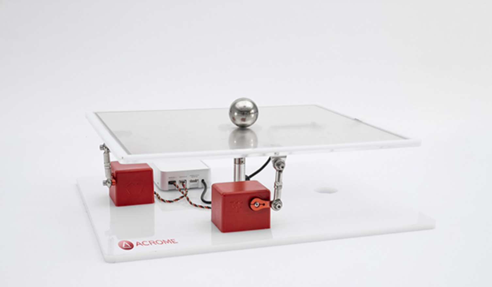
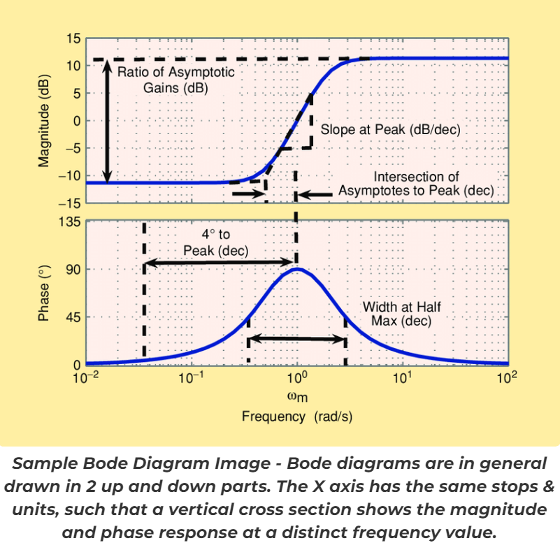
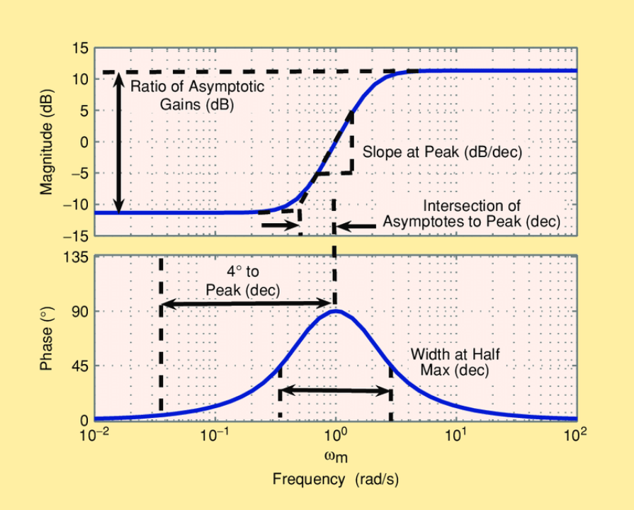
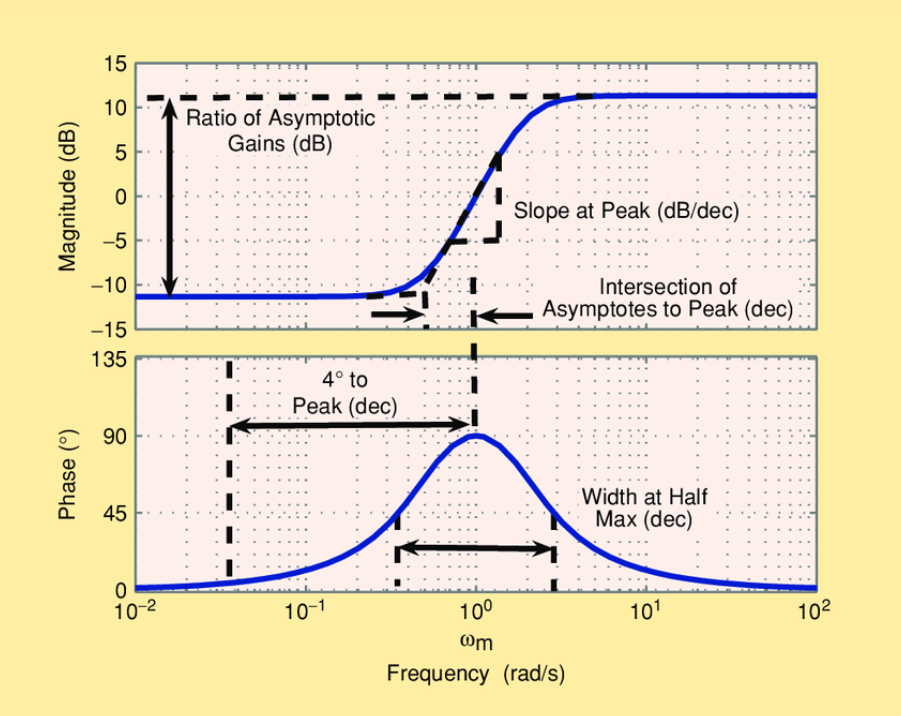

Exploring Control Systems and Stability:

Introduction
Control systems engineering is a fundamental aspect of robotics, mechatronics, and various engineering disciplines. Gaining a solid understanding of control systems often requires a hands-on approach that allows students and researchers to visualize and grasp the underlying principles. In this comprehensive guide, we will discuss the ACROME Ball Balancing Table, a powerful educational and research system designed to understand control system concepts. We will also explore the significance of Bode diagrams, a critical tool for analyzing the frequency response of linear, time-invariant systems. Finally, we will show how a Bode diagram application can be run with the Ball Balancing Table.
The ACROME Ball Balancing Table consists of a flat surface with a ball placed on it. The objective is to balance the ball at the center of the table or at desired positions using a combination of motion commands and software algorithms. The product is equipped with sensors and actuators that interact with the top plate, which makes the ball move on the plate. A software interface is also given to let users manipulate the table's movements, analyze system’s response, and adjust control parameters.
Key Features and Components of the Ball Balancing Table
The Ball Balancing Table is designed with several key features and components that make it an effective tool for teaching control systems and mechatronics. These features include:
High-precision touch surface for ball position feedback (camera-based feedback optional)
RC servo motors are used for table actuation, which are familiar to students
Implementation of advanced digital control techniques using different programming languages
Software Options and Flexibility
One of the main strengths of the Ball Balancing Table is its compatibility with various software platforms, which allows users to experiment with different control techniques and maximize learning flexibility. The software options available for the Ball Balancing Table include:
MATLAB/Simulink
LabVIEW
Altair Activate
Python
C for/with STM32 software
With this open architecture and extensive courseware, users can experiment with various control techniques, including robust control, adaptive control, and more. This flexibility enables students and researchers to tailor their learning experience to their specific needs and interests.
Courseware and Experiments
The Ball Balancing Table is accompanied by a comprehensive set of courseware and experiments designed to help students and researchers gain a deeper understanding of control systems and mechatronics. These experiments cover a wide range of topics, such as:
PID control
System modeling and simulation
System identification
Frequency response analysis (ie. Bode diagrams, subject of this article)
Stability analysis
Advanced control techniques (Fuzzy logic, adaptive control)
Bode Diagrams
1 Overview and History of Bode Diagrams
Bode diagram is an essential tool in control systems engineering, enabling engineers to analyze the input vs. output relationship of linear, time-invariant systems using the frequency domain information. Named after Hendrik Wade Bode, an American engineer who made significant contributions to control systems theory, these diagrams consist of two plots: the magnitude plot and the phase plot. The magnitude plot displays the gain of the system as a function of frequency, while the phase plot shows the phase shift introduced by the system as a function of frequency as well.
2 The Importance of Bode Diagrams in Control Systems Engineering
Bode diagrams play a crucial role in understanding and analyzing the behavior on how to control a system. 4 fundamental information can be gathered from a Bode diagram of a system, these are:
Observing System’s stability: By analyzing the gain and phase margins, engineers can determine if a system is stable. If not stable, then it can also help to understand what modifications are needed in control parameters to improve stability.
Assessing the System’s performance: Bode diagrams help engineers understand the system's frequency response, enabling them to predict its performance under various conditions.
Designing controllers: Engineers can use Bode diagrams to design and tune controllers, such as PID controllers, to achieve the desired system performance and stability.
Troubleshooting and diagnosing issues: By comparing the Bode diagrams of a system under normal conditions and when problems arise, engineers can identify and resolve issues related to control system performance.
3 Analyzing Bode Diagrams: Gain and Phase Margins
Two critical parameters derived from Bode diagrams are the gain margin and the phase margin. These margins provide valuable insight into the stability of a control system.
Gain Margin: The gain margin is the difference in decibels (dB) between the system's gain and 0 dB at the frequency where the phase shift is -180 degrees. A positive gain margin indicates that the system is stable, while a negative gain margin suggests instability.
Phase Margin: The phase margin is the difference in degrees between the system's phase shift and -180 degrees at the frequency where the gain is 0 dB. A positive phase margin signifies a stable system, while a negative phase margin indicates instability.
The Relationship between Bode Diagrams and the Ball Balancing Table
1 Using the Ball Balancing Table to Study Bode Diagrams
The Ball Balancing Table serves as an excellent platform for studying Bode diagrams and understanding their importance in control systems engineering. By analyzing the table's control system using Bode diagrams, users can evaluate its stability, performance, and system response Ball Balancing Table has a ready-to-use graphical user interface (GUI), which measurers and plots the frequency response of the control system governing the table's movements. Users can change and observe the effects of different controller parameters on the system's performance. Please see below image on how the users can adjust these parameters to change the stability and performance of the product, giving them a hands-on understanding of the relationship between Bode diagrams and the control system's behavior.
2 Experimenting with Different Control Techniques
The Ball Balancing Table's software allows users to experiment with different control techniques and observe their impact on the system's frequency response. This hands-on experience helps students and researchers develop a more in-depth understanding of control theory principles, such as gain and phase margins, and how these concepts can be applied in real-world scenarios.